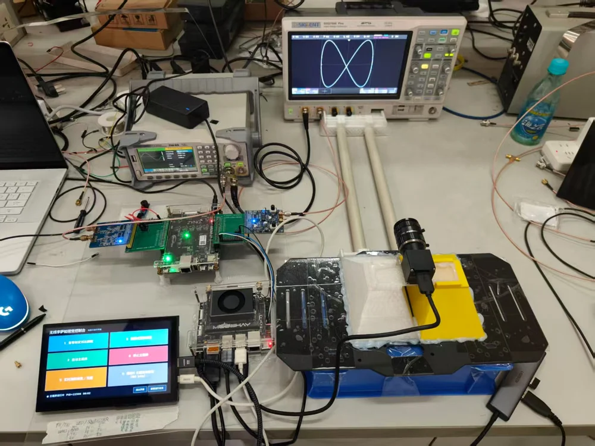
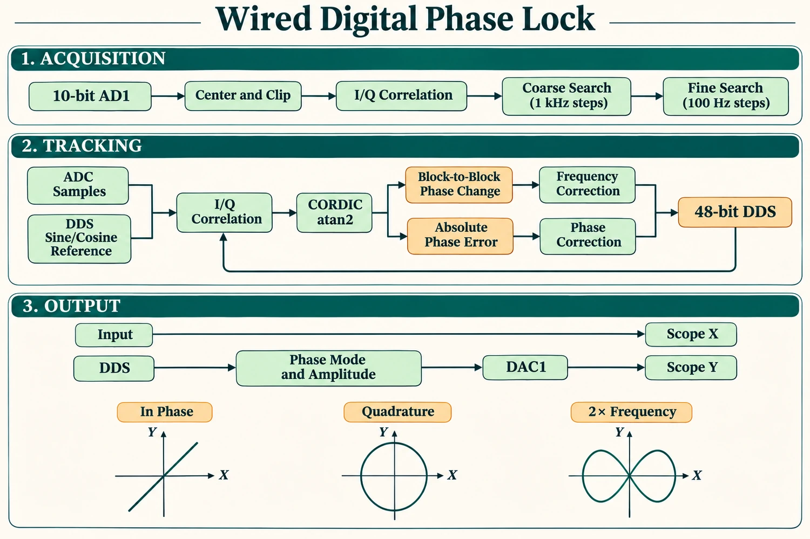

ENGINEERING RECORD
/
03
Digital control
Lissajous.
用相位在示波器上作图
示波器 X 轴接原始信号，Y 轴接 FPGA 的 DDS 输出。调整两轴的相位和频率关系，就能改变屏上的图形。
省一等奖2026 · 全国大学生电子设计竞赛 · 江苏赛区 F 题
FIG. 03A
竞赛工作台


01
/
READING NOTES
同一套硬件如何画出三种轨迹？
-
捕获频率
输入经预处理后进入 I/Q 相关器；数字锁相环先粗扫频率，再细扫并锁定。
-
校正相位
用相邻块的相角变化估计频偏，用绝对相位误差校正相位。
-
回到示波器
DDS 重建 Y 轴，X 轴仍接原始输入。两轴的频比和相位共同决定图形。
02
/
REFERENCE
显示模式
正交模式下，两通道有效幅值相同时为圆，幅值不同时为椭圆。
| 显示模式 | 两轴关系 | 轨迹 |
|---|---|---|
| 同相 | 同频、同相 | 斜线 |
| 正交 | 同频、相差 90° | 圆或椭圆 |
| 二倍频 | 两轴频率比 1 : 2 | 横向 ∞ |
03
/
ORIGINAL MATERIAL
原始材料
FIG. 03B
有线锁相架构

